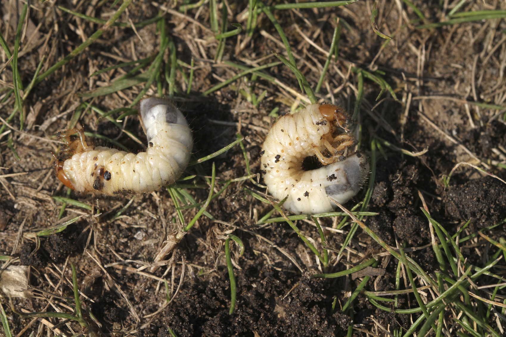

Moles
Lawn damage caused by moles plagues homeowners and lawn care specialists alike. Seldom seen as they tirelessly tunnel underground, moles leave their telltale marks aboveground as unsightly "mole hills", mounds of soil, or grassless brown streaks. Trapping is most successful during the spring and fall months after a rain. Moles are more difficult to locate in the summer and winter months, since their tunnels are deeper in the soil. When using a mole trap, locate the active runways first. Do this by stepping on a run or mound and mark the location. Wait for 24-48 hours to see if the opening is re-opened (indicating mole activity). Place mole traps in this location.

Grub Worms
White grubs feed on grass roots and cause brown patches of grass. Dog urine, uneven watering and improper use of pesticides and herbicides cause similar brown patches, so dig around the roots of the grass and count the number of grubs you find in one square foot.

Rabbits
Because of their prolific nature, there are few prevention methods that work. Even hunting and humane measures like live trapping are only temporary when there’s a rabbit problem in your yard. To solve a rabbit problem, make your yard as inhospitable as possible. Clear brush piles and debris where rabbits can hide. Fence off woody stems to about 20 inches above ground and place chicken wire around any vegetables or flower gardens in your yard.